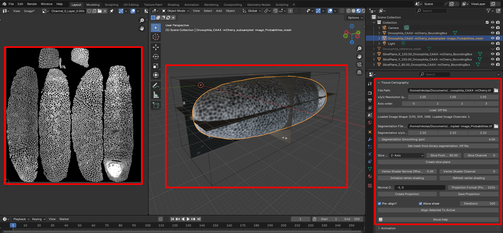
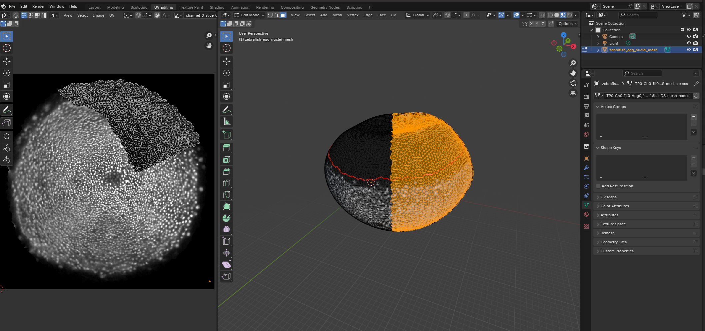
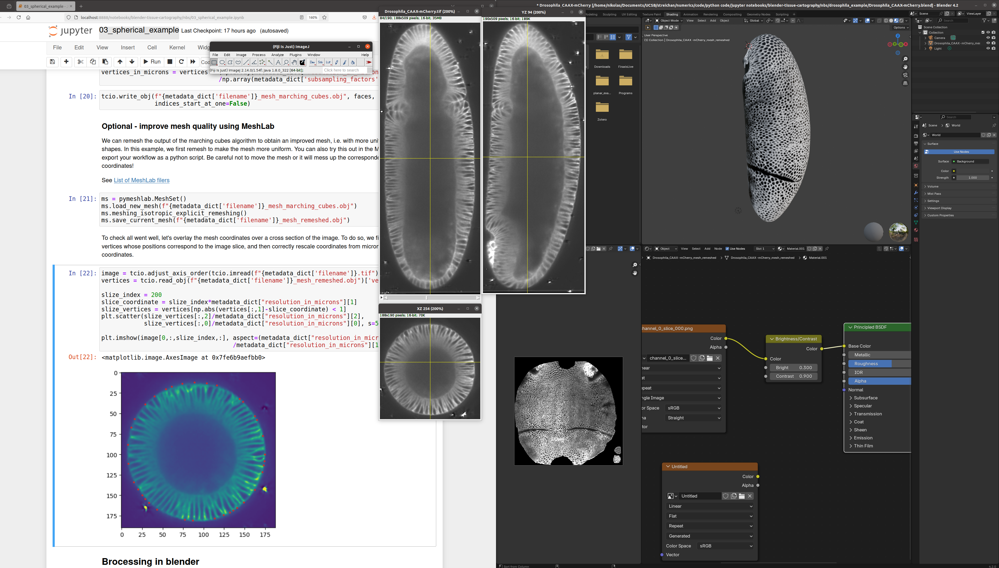

blender-tissue-cartography
What this tool does
Tissue cartography extracts and cartographically projects surfaces from volumetric image data. This turns your 3d data into 2d data which is much easier to visualize, analyze, and computationally process. Tissue cartography is particularly useful in developmental biology, analyzing 3d microscopy data by taking advantage of the laminar, sheet-like organization of many biological tissues. For more on tissue cartography, see Heemskerk & Streichan 2015 and Mitchell & Cislo 2023.
blender_tissue_cartography comprises an add-on to do tissue cartography using the popular 3d creation software blender, as well as a python package for creating custom/automatized analysis pipelines, and a set of template analysis pipelines/tutorials.
The goal is to make tissue cartography as user-friendly as possible using simple, modular Python code and blender’s graphical user interface.
Work in progress!
This project is a work in progress and may change rapidly.
Installation
blender_tissue_cartography comprises both an add-on that allows you to do tissue cartography purely graphically within Blender, as well as a python library for custom and/or automatized pipelines.
System requirements Both the Python library and the add-on have no minimum system requirements and can run on any modern laptop. For loading and processing large volumetric image data, you will need sufficient RAM (e.g. if you have a laptop with 8GB RAM, you will likely not be able to load an process a 2GB volumetric .tif file). Most operations in Blender, in particular rendering, will run much faster if your computer has a GPU. The MeshLab library which is required for some (non-essential) operations is not available of new ARM Apple computers.
Blender add-on
Install the non-python programs: Fiji (optional), Ilastik, Meshlab (optional), and Blender 4.3.
From GitHub, download the file
blender_addon/blender_tissue_cartography-1.0.0-[XXX].zipwhere[XXX]is your operating system (e.g.linux_x64).- If your operating system is not available, you can also download
blender_addon/blender_tissue_cartography.py. In this case you will need to install the python libraryscikit-imagein Blender’s Python interface.
- If your operating system is not available, you can also download
Install the add-on: Click “Edit -> Preferences -> Add-ons -> Add-on Settings -> Install from disk” and select the file you just downloaded.
Restart Blender. The add-on can now be found under “Scene -> Tissue Cartography”.
Python library
Install the non-python programs: Fiji (optional), Ilastik, Meshlab (optional), and Blender.
Install Python via anaconda/miniconda, if you haven’t already.
Install
blender_tissue_cartography:- run
pip install blender-tissue-cartographyin a command window.
- run
(Optional) Install extra Python library for
pymeshlab, required for some advanced (re)meshing functionality. This package is not available on new ARM Apple computers.- run
pip install pymeshlabin a command window
- run
The project is hosted on pip, with source code on GitHub.
Developer installation
If you want to extend blender_tissue_cartography:
Clone the github repository.
Create a
condaenvironment with all Python dependencies and install theblender_tissue_cartographymodule. Open a command window in theblender-tissue-cartographydirectory and type:conda env create -n blender_tissue_cartography -f environment.ymlconda activate blender_tissue_cartographypip install -e .
(Optional) Install extra Python library for
pymeshlab, required for some advanced functionality (remeshing and surface reconstruction from within Python).pip install pymeshlab- Note that this package is not available on new ARM Apple computers.
Install nbdev
Documentation
Full documentation (including tutorials) is available here: https://nikolas-claussen.github.io/blender-tissue-cartography/
Datasets and interactive Jupyter notebooks for the tutorials can be downloaded here: https://github.com/nikolas-claussen/blender-tissue-cartography/tree/main/nbs/Tutorials/
The methods paper explains the general idea of tissue cartography, the design of
blender_tissue_cartography, and shows several examples: https://github.com/nikolas-claussen/blender-tissue-cartography/tree/main/blender_tissue_cartography_methods_paper.pdf
Basic usage
For a complete set of tutorials, see the documentation website.
Tissue cartography workflow
Tissue cartography starts with a 3D, volumetric image.
Create a segmentation of your 3D data to identify the surface you want to extract
Convert the segmentation into a mesh of your surface of interest
Cartographically unwrap the mesh into a 2D plane
Project your 3D data onto the unwrapped mesh
Visualize the results in 3D using blender or use the 2D projected data for quantitative analysis.
Batch process multiple 3D images (e.g. frames of a movie)
Blender add-on
The Blender add-on allows you to carry out steps 2-5 entirely within Blender. Here is a screenshot using the example Drosophila dataset:

Left: Projected 2D image. Center: 3D view of image data (volume bounding box, image slices, and extracted surface). Right: Tissue Cartography add-on panel.
In Blender, you can edit meshes and cartographic projections interactively - you can create a preliminary projection of your data automatically, and use it as guidance when editing your cartographic map in blender. Here, we edit the “seam” of our cartographic map based on the region occupied by cells during zebrafish epiboly (tutorial 6).

Python library
For advanced users, the blender_tissue_cartography library allows creating custom and automated tissue cartography pipelines, typically run from a jupyter computational notebook (which can also serve as lab notebook - notes, comments on the data). blender_tissue_cartography also provides tools for correct quantitative analysis of image data on curved surfaces.
Below is a screenshot to give you an idea of the workflow for the example Drosophila dataset: Volumetric data in ImageJ (center), jupyter computational notebook to run the blender_tissue_cartography module (left), and blender project with extracted mesh and texture (right).
Tutorials
Fully worked-out tutoruals are provided on the documentation webpage. Test data for the tutorials can be downloaded from the nbs/Tutorials/ directory.
For the Python library, tutorials take the form of jupyter computational notebooks which you can download and run on your own computer (click the green button “Code” to download a .zip.) To run a tutorial on your computer, follow the installation instructions and then launch jupyter and work through the notebooks in the Tutorials directory in order. I recommended being comfortable with running simple Python code (you don’t have to do any coding yourself).
The tutorial notebooks can be used as templates for your own analysis pipelines. Here is an example of a jupyter computational notebook (left), and the created projection visualized in Blender (right).

Notes for Python beginners
You will need a working Python installation (see here: installing anaconda/miniconda, and know how to launch jupyter notebooks. You will run the computational notebooks in your browser. Here is a video tutorial
Create a new folder for each tissue cartography project. Do not place them into the folder into which you unpacked
blender_tissue_cartography- otherwise, your files will be overwritten if you want to update the softwareThe repository contains two sets of notebooks: in the
nbsfolder and in thenbs/Tutorialsfolder. Thenbs-notebooks are for developing the code. If you don’t want to develop/adapt the code to your needs, you don’t need to look at them. Copy a notebook from thenbs/Tutorialsfolder - e.g.03_basics_example.ipynb- into your project folder to use it as a template.You do not need to copy functions into your notebooks manually. If you follow the installation instructions, the code will be installed as a Python package and can be “imported” by Python. See tutorials!
Dynamic datasets
blender_tissue_cartography also allows creating cartographic projections of dynamic datasets (i.e. movies), where the surface of interest can move or deform over time. The user creates a cartographic projection for a reference timepoint which is transfered to all other time-points using surface-to-surface registration algorithms. This generates consistent projections across all timepoints - see tuorials 8 and 9.
Software stack
Note: the Python libraries will be installed automatically if you follow the installation instructions above.
Required
Optional
Other useful software
- MicroscopyNodes plug-in for rendering volumetric
.tiffiles in blender - Boundary First Flattening advanced tool for creating UV maps with graphical and command line interface
- pyFM python library for mesh-to-mesh registration (for dynamic data) which may complement the algorithms that ship with
blender_tissue-cartography
Acknowledgements
This software is being developed by Nikolas Claussen in the Streichan lab at UCSB. We thank Cecile Regis, Susan Wopat, Matthew Lefebvre, Sean Komura, Gary Han, Noah Mitchel, Boris Fosso, and Dillon Cislo, for sharing data, advice, and software testing.